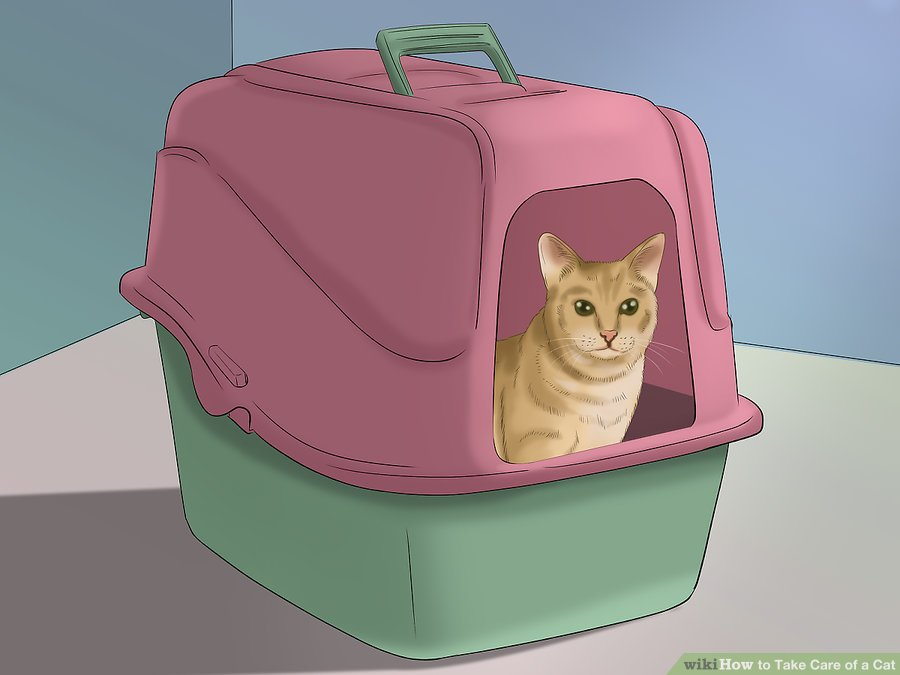
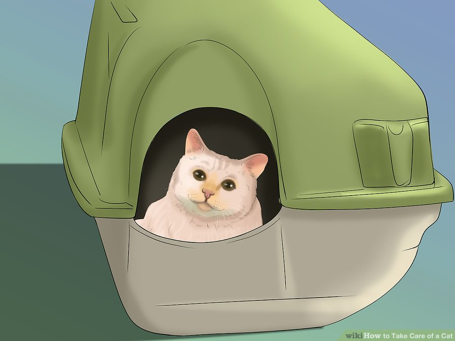
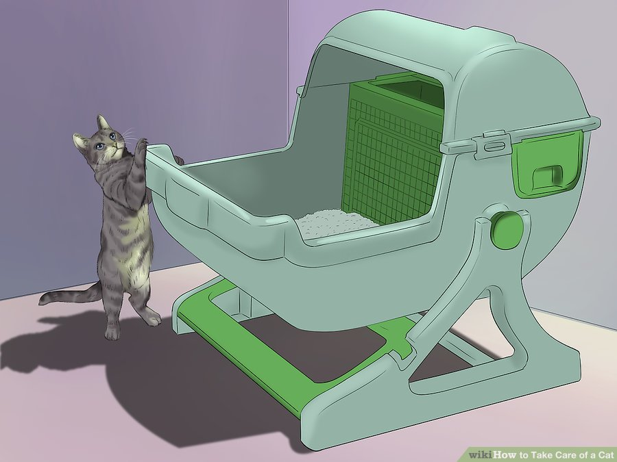
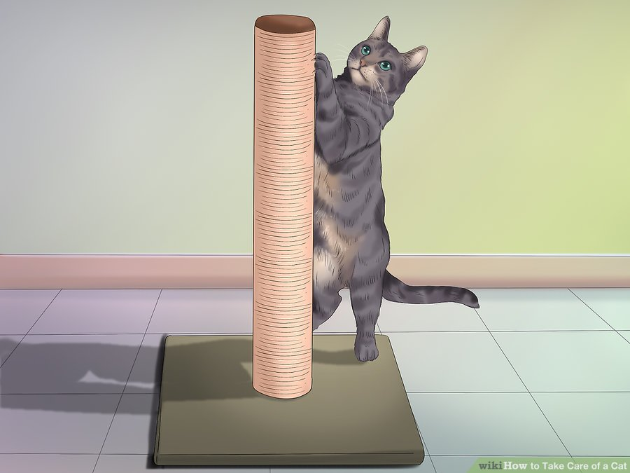
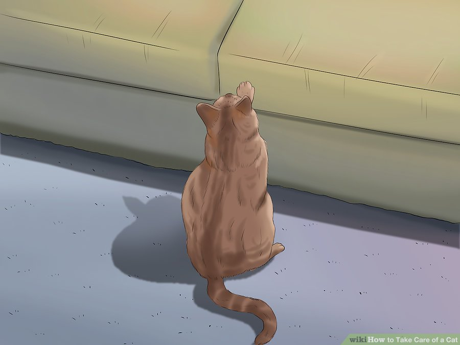
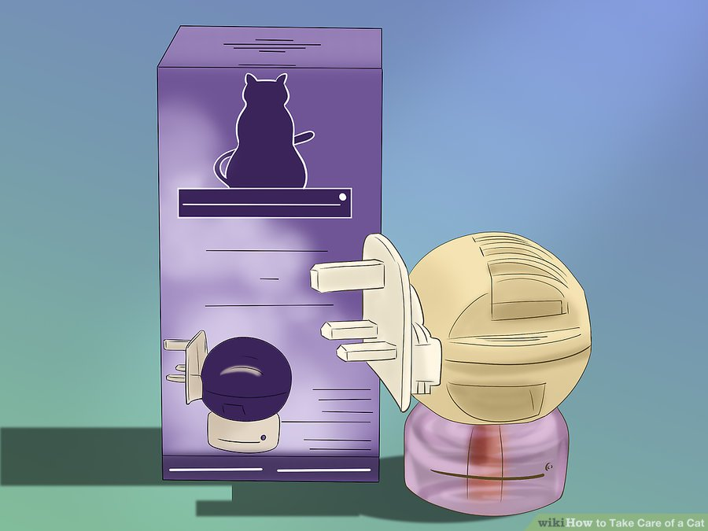

How to Take Care of a Cat
With their playful personalities, affectionate behavior, and adorable faces, cats can be the ideal pet. But, despite popular opinion, cats are not maintenance-free! To keep your cat healthy and happy, you need to know how to take care of and provide the best possible life for your new furry friend.
Table of Contents
Part 1: Getting a Good Cat

1
Decide if you want a kitten or a full-grown cat. Kittens are adorably tempting, but be honest with yourself about whether you'll be able to match that energy level, and handle that level of responsibility. Shelters are full of loving adult cats who have a much harder time getting adopted. An adult cat will be calmer and quieter than a kitten, but may also have behavioral issues from its early life. Adult cats may also have medical conditions you'll have to address sooner than you would with a kitten. Also, kittens often scratch very painfully; Decide if you want that.

2
Consider medical concerns that may come with a specific cat. If you have your eye on one cat, in particular, ask about its medical history to see if it requires any long-term care. Would you be able to afford this cat's medical needs?
- Even if the cat is healthy, consider its breed. Purebred cats of different breeds can have their own genetic problems to overcome. For example, flat-faced cats like Manx and Scottish folds often develop breathing problems.
- Purebred cats are more likely to have genetic medical problems than non-pedigreed cats.

3
Consider the amount of time you have for a cat. While a cat doesn't need daily walking like a dog, don't be fooled into thinking that cats and kittens aren't a time commitment. They're still active pets that need a lot of play, and affectionate companions who demand attention. You'll also spend time cleaning the litter box and giving the cat structured meals.
- The average lifespan of an indoor cat is 13-17 years, so be aware that you're making a long-term commitment to a new family member.

4
Calculate whether you can afford a cat. The one-time purchase fee for a cat can range from $45 for a shelter adoption to several hundred dollars for a purebred cat. Beyond that, though, you'll have to pay for food, litter, toys, and regular medical expenses. The ASPCA estimates that in the first year of owning a cat, you will likely spend about $1,035 on it. (That amount goes down after you've bought the major equipment and had your initial medical procedures.)

5
Consider adopting a cat from an animal shelter. The cost is minimal considering what you get: a fully vaccinated, health examined, and spayed or neutered cat. Any "free" cat is ultimately going to cost you those things down the line, if you're a responsible cat owner.
Part 2: Housetraining Your Cat
1
Encourage the cat to use a litter box. Most cats will prefer the litter box to other parts of the house because of the texture of the litter. But, there are still steps you need to take to make sure you're offering the litter box as the best place to use the bathroom.
- Place the box in a quiet spot where the cat won't be bothered by people, dogs, or loud noises.
- To keep the litter box clean, make sure you scoop the litter daily, and clean the box weekly. You should also replace or refresh the litter at least once a week.
- Provide enough litter boxes for more than one cat. If you have 2 cats, you need 3 litter boxes in different areas of the home. One cat might try to intimidate a less dominate cat away from using a single box.

2
Make the litter box a comfortable place. Don't frighten or startle your cat when it's using the box, or it may form a bad association with the box and start avoiding it. Buy a large box, even if you have to spend a little money on it. Cats are more comfortable in a larger (in area, not height) box.
- Don't switch brands of litter on your cat, because cats don't like sudden change. Switching from a clay litter to a scoopable clumping type of litter or vice versa might upset the cat so much it stops using the box.
- Don't use heavily scented litters that might deter a cat from litter box use.

3
Take young or old cats needs into consideration. Keep in mind that kittens and older cats with arthritis or other health problems may have problems getting in and out of a box that's too tall. Use low-height boxes in an easily accessible area for kittens and cats with special needs, or buy an adjustable litter box.

4
Provide the cat with a scratching post. Scratching is a normal part of cat behavior, and there's no way you can train it out of them. If your cat still has its claws, he'll need one or two scratching posts to keep him from scratching up furniture, woodwork, and so on. By providing a post, you allow the cat to indulge in normal, healthy behavior.

5
Discourage the cat from exploring forbidden surfaces. Cats are curious, and will jump on counters or other places you'd like them to steer clear of. Scat mats, a perfectly timed mist of water from a spray bottle, or even a stern "no" can correct this behavior. With time and patience, you can teach your cat to stay away from your protected areas.
- You can also use a rattle can (an empty soda can filled with a few pebbles and the opening taped over). Toss it gently on the ground to scare a cat away from forbidden surfaces. DO NOT throw the can at the cat, for that may harm your cat.

6
Consider using feline pheromone products. These products, which fill the air with calming synthetic pheromones, come as sprays or diffusers that plug into electrical outlets. They can help resolve litter box or scratching issues, and have also been proven to calm stressed or anxious cats.